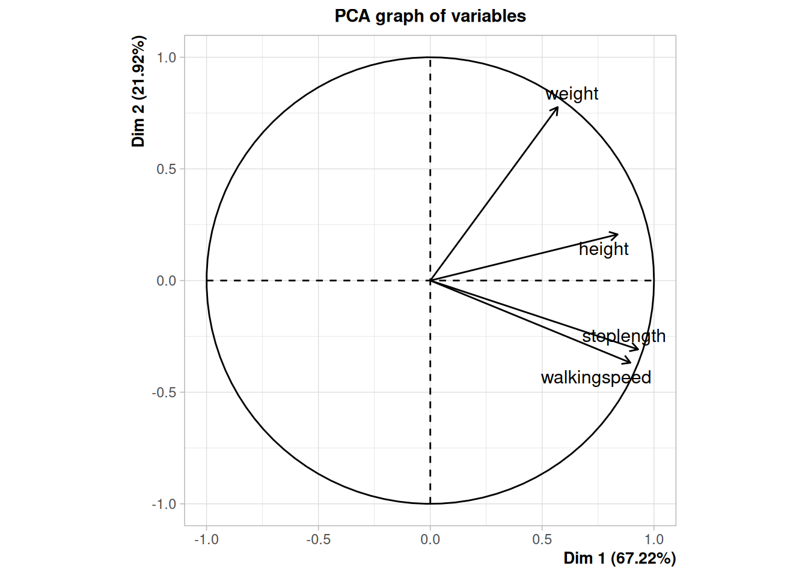
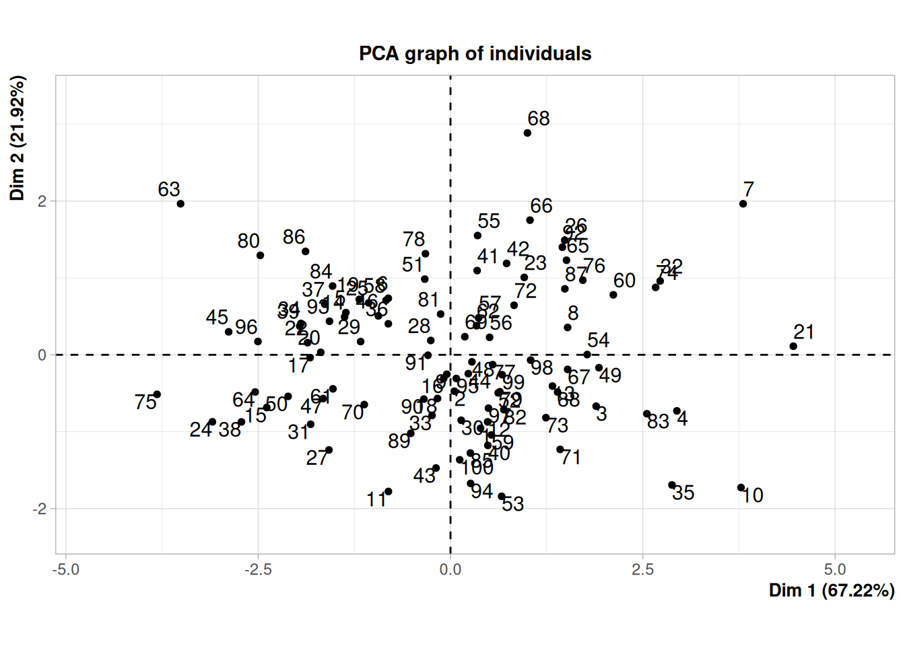
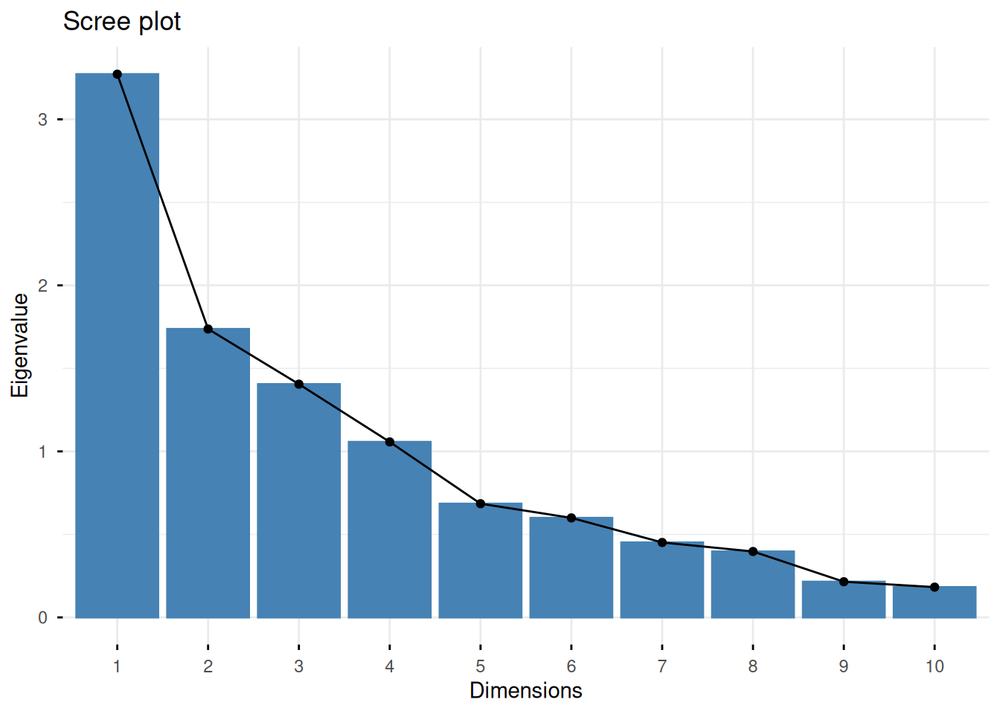
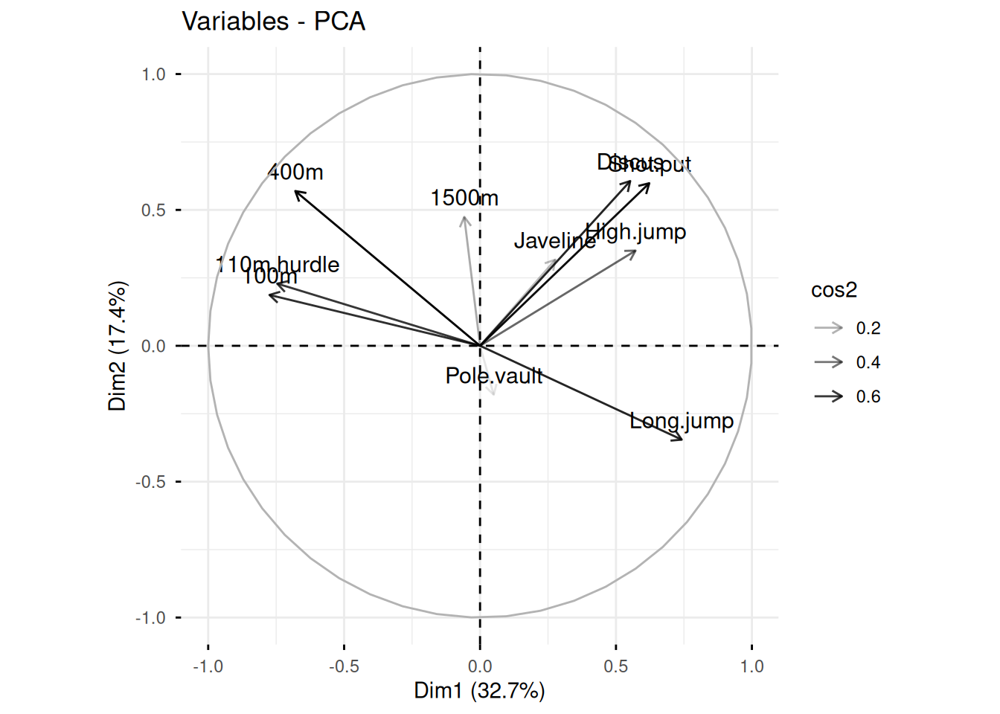
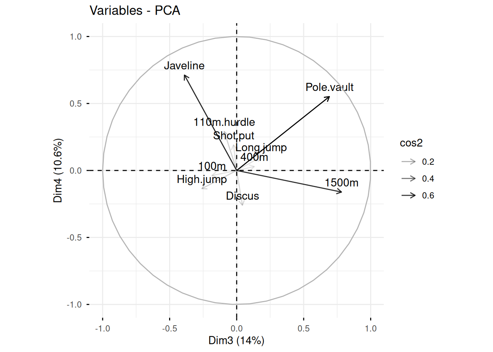
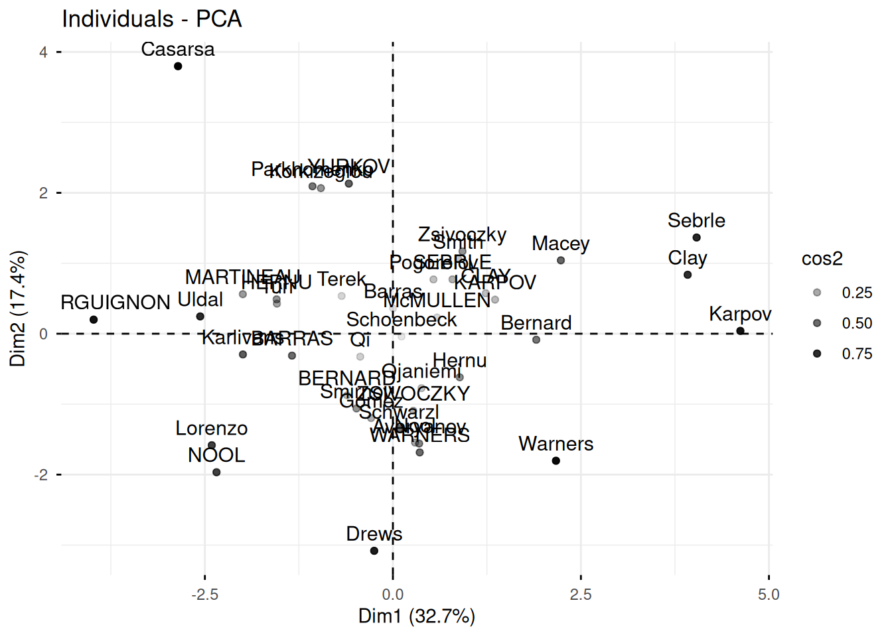
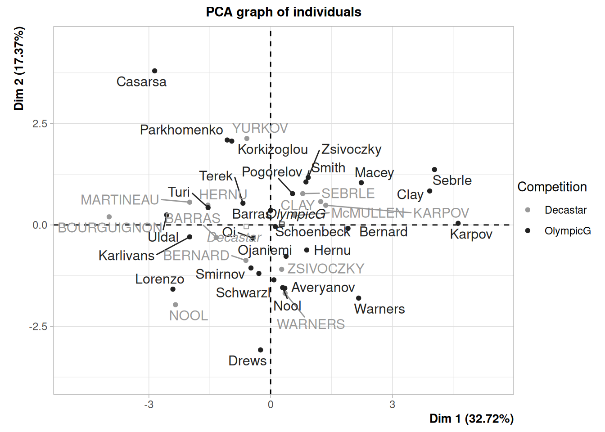

# A tibble: 4 × 3
variable moyenne variance
<chr> <dbl> <dbl>
1 weight 68.8 153.
2 height 1.69 0.01
3 steplength 70.5 52.1
4 walkingspeed 1.35 0.02TD1 - Analyse en composante Principale
Avant-propos
Les TD et TP du cours MAF servent trois objectifs:
Revenir sur certaines notions de cours pour mieux les appréhender
donner des outils pratiques pour mettre en oeuvre les méthodes vues en cours,
réfléchir à leur mise en oeuvre et leur application dans des cas concrets.
Il est donc fréquent que l’on fasse certaine partie avec peu d’outils (à la main) pouur bien faire le lien avec les concets de cours, tandis que d’autres servent d’exemple pour illustrer comment dérouler une analyse sur un jeu de données en particulier.
Faire le lien avec le cours
On s’intéresse à un jeu de données de 100 individus, pour lesquels on mesure 4 variables
- le poids en \(Kg\) (variable
P) - la taille en \(m\),
- la longueur de pas en \(cm\),
- la vitesse de marche en \(m.s^{-1}\).
Que peut-on dire de la dispersion le long de chacun des axes initiaux. Les variance des variables weight et steplength sont bien plus grandes.
Combien vaut l’inertie projeté sur l’axe de vecteur directeur \((1,0,0,0)^\top\) ?
L’inertie totale est la somme des variances.
En projetant sur le premier axe, on ne garde que l’information sur la première variable. Donc l’inertie du nuage ainsi projeté est la variance de la première variable soit 153.342475
L’inertie par rapport à un axe est l’inertie perdu en projetant sur cet axe. Donc c’est l’inertie totale moins l’inertie portée par l’axe soit 52.167525
- Combien vaut l’inertie projeté sur l’axe de vecteur directeur \((0,1,0,0)^\top\) ?
0.008212
On note \(X\) de dimension \(100 \times 4\) la matrice des données centrées. Chaque individu a le même poids.
- On souhaite utiliser la distance euclidienne puis réaliser une ACP. le cours indique qu’on diagonalise la matrice \(M^{1/2}VM^{1/2}\). Indiquer ce que sont les matrices \(V\) et \(M\) impliquées.
Puisqu’on choisit la distance euclidienne la métrique \(M\) est la matrice Identité \(4 \times 4\).
Dans le cours la matrice \(V= X^\top W X\), où \(W\) est la métrique sur l’espece des variables \(\mathbb{R}^n\). Puisque tous les individus ont le même poids, \(W = 1/n I_n\), donc \(V\) est la matrice de covariance.
- On diagonalise la matrice \(M^{1/2}VM^{1/2}\) et on obtient les valeurs propres suivantes. Quelle est l’inertie portée par le premier plan principal, quel pourcentage de l’inertie totale ceci représente-t-il ? Pensez vous qu’on ait ainsi une bonne manière de représenter les données inditiales en seulement deux dimensions ?
[1] 160.754 44.752 0.004 0.002L’inertie portée par le premier plan est la somme des deux plus grandes valeurs propres.
205.5061163
Le pourcentage que ceci représente est donné par \(\frac{\lambda_1 +\lambda_2}{\sum_{i=1}^p \lambda_i}\)
0.999969
A cause des ordres de grandeur différents des différentes variables, la représentation est telle qu’on n’a pas d’intérêt à préserver l’information sur les variables 2 et 4, car elles sont associées à une plus petite variance. Les variables initiales ont des poids tres différents dans la construction des axes ce qui n’est pas vraiment pertinent. On va vouloir donner une importance identique à chacune des variables.
On propose de faire une ACP normée, c’est à dire qu’on change la métrique dans l’espace des individus pour donner le même poids à chaque variable.
- Quelle est l’inertie portée par l’axe de vecteur directeur \((1,0,0,0)^\top\) dans ce cas ?
Le premier axe comme tous les autres porte une valeur d’inertie de 1.
- Que deviennent les matrices \(V\) et \(M\) dans ce cas ?
La matrice \(V\) ne change pas, \(M\) est une matrice diagonale diagonale \(4 \times 4\), dont le terme diagonal \(i\) est l’inverse de l’écart type de la variable \(i\).
- Les valeurs propres de \(M V M\) sont données ci-dessous. Quelle est maintenant la part d’inertie représentée sur le premier axe principal, sur le premier plan principal.
[1] 2.689 0.877 0.377 0.058On obtient à nouveau en faisant \(\frac{\lambda_1 +\lambda_2}{\sum_{i=1}^p \lambda_i}\), ce qui vaut maintenant 0.8913926
- On utilise le package
FactoMineRpour réaliser l’ACP. Peut on deviner quelle est la métrique utilisée par défaut ? Quelles sont les variables bien représentées ? Discuter du lien entre les variables.
walking_dta_pca <- PCA(walking_dta, graph = FALSE)
walking_dta_pca$eig eigenvalue percentage of variance cumulative percentage of variance
comp 1 2.68869333 67.217333 67.21733
comp 2 0.87687700 21.921925 89.13926
comp 3 0.37659068 9.414767 98.55403
comp 4 0.05783899 1.445975 100.00000plot(walking_dta_pca, choix = "var")
La somme des valeurs propres vaut 4, soit le nombre de variables, ont peut donc en déduire que par défaut la fonction PCA fait une ACP normée. On peut aussi vérifier dans l’aide.
Les vecteurs de variables sont de norme 1 dans l’ACP normé, on constante que la norme des vecteurs projetés est proche de 1 (proche du bord du cercle), on ne perd donc que peux d’information, l’information portée par ces variables est bien représentée dans la projection proposée. Puisque toutes les variables sont bien représentées on peut discuter leur lien. steplength et walkingspeed sont très fortement corrélée mais quasimment orthogonale et donc indépendante du poids. Surprenant, la taille et le poids ne sontn pas si fortement corrélées.
- En utilisant le graphique ci-dessous, que pouvez-vous dire
- sur l’individu 10 ?
- sur l’individu 94 ?
plot(walking_dta_pca, choix = "ind")
L’individu 21 se caractérise par une coordonée très prositive sur l’axe 1 et quasi nulle sur l’axe 2. L’axe 1 étant fortement lié à la vitesse de marche et à la taille, l’individu 21 marche vite, avec de grands pas et semble grand au regard de l’ensemble de notre échantillon. La valeur presque nulle sur l’axe 2, donne à penser qu’il a plutot un poids relativement moyen. L’individu 94 a une valeur très négative sur l’axe 2, ce qui indique qu’il a un poids plus faible que la moyenne (l’origine est le point représentant un poids moyen), sa faible valeur sur l’axe 1 donne à penser que sa vitesse de marche, sa longueur de pas et sa taille sont dans dans la moyenne.
- Quels sont les individus qui contribuent le plus à la formation du premier axe ?
walking_dta_pca$ind$contrib |> as_tibble() |> rowid_to_column("Ind") |> arrange(-Dim.1)# A tibble: 100 × 5
Ind Dim.1 Dim.2 Dim.3 Dim.4
<int> <dbl> <dbl> <dbl> <dbl>
1 21 7.39 0.0142 1.09 0.0424
2 75 5.41 0.302 2.09 1.94
3 7 5.38 4.40 1.15 2.90
4 10 5.30 3.40 2.80 2.01
5 63 4.58 4.40 0.233 0.233
6 24 3.56 0.866 0.333 3.48
7 4 3.22 0.607 0.645 0.594
8 45 3.09 0.102 0.0596 0.242
9 35 3.08 3.27 0.0590 0.715
10 32 2.76 1.05 1.54 0.663
# ℹ 90 more rowsLa contribution d’un individu \(i\) à la formation de l’axe \(j\) est la proportion de l’inertie portée par cet axe du à un individu
\[contrib_{ij} = \frac{1/n C_{ij}^2}{\lambda_j}\]
Sans surprise les individus extremes contribuent fortement à la formation des axes, c’est le cas de 21, 75, 7 et 10 pour l’axe 1 qui contribuent pour plus de \(5\%\) alors qu’on s’attend en moyenne à une contribution de 1/n soit \(1\%\) par individu
Si on regarde sur l’axe 2, on trouve 68 et 63 et dans une moindre mesure 94 identifié plus tôt
- Quels sont les individus les mieux représentés sur le premier axe ?
walking_dta_pca$ind$cos2 |> as_tibble() |> rowid_to_column("Ind") |> arrange(-Dim.1)# A tibble: 100 × 5
Ind Dim.1 Dim.2 Dim.3 Dim.4
<int> <dbl> <dbl> <dbl> <dbl>
1 17 0.994 0.000398 0.00178 0.00398
2 54 0.990 0.00000331 0.00686 0.00347
3 45 0.985 0.0106 0.00266 0.00166
4 21 0.979 0.000615 0.0202 0.000121
5 96 0.972 0.00465 0.0184 0.00483
6 29 0.962 0.0209 0.0000642 0.0169
7 64 0.957 0.0348 0.00753 0.000453
8 34 0.936 0.0412 0.0111 0.0120
9 75 0.926 0.0169 0.0502 0.00713
10 8 0.925 0.0505 0.0144 0.0100
# ℹ 90 more rowsLa qualité de la représentation d’un individu sur le premier axe est la part d’information portée par cet individu qui est bien représentée dans l’e plan’axe
\[\frac{ C_{i1}^2 }{\rVert x_i \lVert^2}\]
- Comment sont définies ces deux quantités ?
Je viens de répondre
- Comment mesurer la qualité de la représentation sur le premier plan ?
On additionne les qualité de représentations ou autrement dit
\[\frac{ C_{i1}^2 + C_{i2}^2 + }{\rVert x_i \lVert^2}\]
Une première ACP. Etude des performance au Décathlon
La package FactoMineRcontient un jeu de données sur des performances au Décathlon. Le tableau de données contient 41 lignes et 13 colonnes. Les dix premières colonnes correspondent aux performances des athlètes pour les dix épreuves du décathlon et les colonnes 11 et 12 correspondent respectivement au rang et au nombre de points obtenus. La dernière colonne indique la compétition durant laquelle a eu lieu cette performance (Jeux Olympiques de 2004 ou Décastar 2004). Les lignes sont identifiés avec le nom de l’athlète.
Chargez la package FactoMineR et le tableau de données en tapant la ligne de code suivante :
library(FactoMineR)
data("decathlon")- Discuter de la nature des variables
On a 11 variables quantitatives, les performances aux épreuves et le nombre total de points. Le rang est une variable numérique mais qui a un rôle particulier, on ne peut pas vraiment donner de sens au rang moyen par exemple. enfin on a une variable qualitative la competition dont il s’agit.
Le code ci-dessous calcule des résumés quantitatifs pour les variables pertinentes.
decathlon |> summarise(across(is.numeric, list(moyenne=mean, variance=var ))) |>
pivot_longer(
everything(),
names_to = c("variable", ".value"),
names_sep = "_"
) |>
mutate(variance = variance *(n-1)/n) |> # pour corriger la variance par défaut de R
mutate(across(is.numeric, \(x) round(x, 2)))# A tibble: 12 × 3
variable moyenne variance
<chr> <dbl> <dbl>
1 100m 11 0.07
2 Long.jump 7.26 0.1
3 Shot.put 14.5 0.67
4 High.jump 1.98 0.01
5 400m 49.6 1.32
6 110m.hurdle 14.6 0.22
7 Discus 44.3 11.3
8 Pole.vault 4.76 0.08
9 Javeline 58.3 23.1
10 1500m 279. 135.
11 Rank 12.1 62.1
12 Points 8005. 116055. decathlon <- decathlon |> mutate(Competition = as.character(Competition))- Pour comprendre les relations entre les variables, nous pouvons réaliser une ACP.
- Faut il prendre en compte toutes les variables quantitatives ?
- Si vous deviez construire un score basée sur les 10 épreuves comment feriez vous ?
- Quelle choix de distance feriez vous ?
On peut prendre en compte les 10 résultats aux épreuves, et mettre le score de coté pour construire les axes. Dans l’idée le score devrait être une combinaison des 10 variables de base qui résument le mieux la variabilité entre les participants. l’axe 1 est un bon candidat. Les épreuves sont dans des unités différentes, on veut donner le même poids à toutes les épreuves donc une ACP normée vaec la distance qui pondère la distance euclidienne par l’inverse de l’écart type.
- l’ACP est réalisée grâce aux commandes suivantes. A quoi servent les options
quanti.supetquali.sup? pourquoi ce choix ? Combien y a t il de variables quantitatives au total ?
decathlon_pca <- PCA(decathlon, scale.unit = TRUE, quanti.sup = c("Rank", "Points"), quali.sup = "Competition", graph = FALSE, ncp = 10)quanti.sup et quali.sup sont des variables que l’on pourra représenter par la suite mais qui ne sont pas utilisé pour construire les axes. Il y a 10 variables prises en compte au total
- Combien suggérez d’axes vous semble-t-il pertinent de regarder ?
library(factoextra) # for nice vizualisation
decathlon_pca$eig eigenvalue percentage of variance cumulative percentage of variance
comp 1 3.2719055 32.719055 32.71906
comp 2 1.7371310 17.371310 50.09037
comp 3 1.4049167 14.049167 64.13953
comp 4 1.0568504 10.568504 74.70804
comp 5 0.6847735 6.847735 81.55577
comp 6 0.5992687 5.992687 87.54846
comp 7 0.4512353 4.512353 92.06081
comp 8 0.3968766 3.968766 96.02958
comp 9 0.2148149 2.148149 98.17773
comp 10 0.1822275 1.822275 100.00000fviz_eig(decathlon_pca, choice = "eigenvalue", ncp = 11)
Dans la représenation initiale, chaque variable compte pour 1 d’inertie, on peut considérer que dès qu’un axe porte plus que 1 d’inertie il résume un peu plus qu’une variable et on peut le regarder. Ce qui nous conduit à regarder 4 axes. L’autre règle est la règle du coude, qui nous conduit à regarder 2 axes
- Quelles sont les variables bien représentées sur le premier plan principal ?
library(factoextra) # for nice vizualisation
fviz_pca_var(decathlon_pca, axes = c(1,2), alpha.var = "cos2")
toutes les variables sont assez bien représentées à l’exception de 1500m, Javeline High.jump et Pole.vault (saut à la perche). On peut remarque que les points sont très bien représentés alors que cette variable n’a pas servi à construire les axes. C’est parfaitement lié à l’axe 1. le système de score du décathlon est bien conçu pour résumer la variabitlité des performances à l’aide d’une seule variable.
- Discuter du lien entre les variables. Cela semble-t-il surprenant ?
100m, et 110m haies sont très fortement corrélés et finalement assez corrélés au 400m. ces épreuves sont des épreuves de vitesse. Les résultats sont parfaitement anti corrélés avec le saut en longueur. Ce qui peut paraitre surepnant au premier abord puisque les athlètes qui performent au saut au longueur sont souvent également performant aux épreuves de vitesse. Pour bien comprendre, il faut prendre en compte qu’une bonne performance à la vitesse est un temps petit, tandis qu’une bonne performance aux sauts en lobgueurs est une longue distance. Un athlète performant dans ces disciplines aurant une forte valeur de sauts en longueur et une petite valeur au 100m, les deux valeurs sont bien anti corrélées. Le saut en hauteur et le disque sont orthogonaux au saut en hauteur, donc indépendants
Le saut à la perche est tout à fait orthogonale au plan de projection, il est donc indépendant de tout ce qui est bien représenté dans ce plan. Donc la performance au saut à la perche est indépendante de la performance au saut en longueur.
- Le saut à la perche
Pole.vaultest il bien représenté ? Sur quel plan faut-il projeté pour pouvoir visualiser les performances au saut à la perche ?
decathlon_pca$var$cos2 Dim.1 Dim.2 Dim.3 Dim.4 Dim.5
100m 0.600190812 0.03502213 0.0340059930 0.0014302206 0.091322660
Long.jump 0.550415232 0.11931587 0.0332008675 0.0103603165 0.001345279
Shot.put 0.387509426 0.35796686 0.0005465513 0.0363251605 0.012354505
High.jump 0.327121422 0.12270561 0.0673464410 0.0183857880 0.308513117
400m 0.461869674 0.32425938 0.0172842817 0.0008586058 0.007689811
110m.hurdle 0.556882084 0.05234639 0.0085816841 0.0845826853 0.027001375
Discus 0.305219255 0.36761593 0.0018448960 0.0674292539 0.010988725
Pole.vault 0.002534268 0.03252860 0.4785272696 0.3041897208 0.108873151
Javeline 0.076790421 0.10048206 0.1518313365 0.5073389244 0.093103658
1500m 0.003372945 0.22488818 0.6117473613 0.0259496775 0.023581254
Dim.6 Dim.7 Dim.8 Dim.9 Dim.10
100m 0.052532985 0.065768884 8.456508e-02 0.002357417 0.032803826
Long.jump 0.056158895 0.177786116 1.752168e-04 0.050045300 0.001196908
Shot.put 0.055920005 0.043286926 3.911301e-02 0.039220335 0.027757216
High.jump 0.131125895 0.003773728 6.210295e-03 0.012753657 0.002064046
400m 0.066261577 0.006985401 1.807328e-02 0.065485634 0.031232355
110m.hurdle 0.005949349 0.057615948 2.006940e-01 0.004841992 0.001504535
Discus 0.121013911 0.083390649 5.849093e-04 0.005148092 0.036764380
Pole.vault 0.041030940 0.004330144 1.258004e-02 0.001479064 0.013926802
Javeline 0.015961591 0.005141616 3.480612e-02 0.013140353 0.001403912
1500m 0.053313533 0.003155852 7.467951e-05 0.020343009 0.033573506On voit sur la mesure de corrélation capturé par les cos2 que le saut à la perche est bien corrélé avec Dim3 et 4, en effet environ 78% de l’information propre aux performance de saut à la perche est portée par ce plan
- Le saut à la perche est la huitième épreuve au décathlon, le javelot la neuvième, le 1500 m la dernière. Que laisse espérer une bonne performance au saut à la perche, quant à la performance au javelot à venir ?
fviz_pca_var(decathlon_pca, axes = c(3,4), alpha.var = "cos2")
On rentre dans des questions d’interprétation plus fine. Sur le plan 3,4 javelot saut à la perche et 1500 m sont bien représentés. le saut à la perche et le javelot sont indpédants. Visiblement les deux performances sont indpéendantes l’une de l’autre. le 1500 m est lui aussi assez faiblement lié.
- La variable nombre de points est très bien représentée par l’axe 1. que pensez de l’intérêt des trois dernières épreuves sur le résultat final ?
*L’information présente sur les 3 dernières epreuves est plutot sur les axes 3 et 4, donc orthogonale à l’axe 1, ce qui signifie que les performances à ces 3 dernières épreuves sont indépendantes du score final. On peut se poser la question de l’intérêt de ces épreuves.”
- Ci-dessous le code pour obtenir la représentation des individus dans le premier plan principal. Citer un excellent décathlonien. Discuter de la performance de Casarsa (en haut à gauche) au 400m. Peut-on affirmer que Qi (près de l’origine) est un décathlonien moyen ?
fviz_pca_ind(decathlon_pca, axes = c(1,2), alpha.ind = "cos2")
Karpov est excellent, a une valeur très forte le long de l’axe 1 qui porte les scores
Casarsa est particulièrement mauvais au saut en longueur et à la vitess dans ce jeu de données
Qi est mal représenté, on ne peut pas vraiment parler de lui dans cette représentation
- Le graphique suivant ajoute l’information sur la Competition. Que pouvez vous déduire des résultats au Decastar et aux Jeux Olympiques ?
Nobs <- nrow(decathlon)
plot.PCA(decathlon_pca,invisible=c('ind.sup'), habillage = c("Competition"), palette = c("#999999", "#222222"))
Sur ces données, les performances au Decastar sont en général moins bonnes qu’aux JO